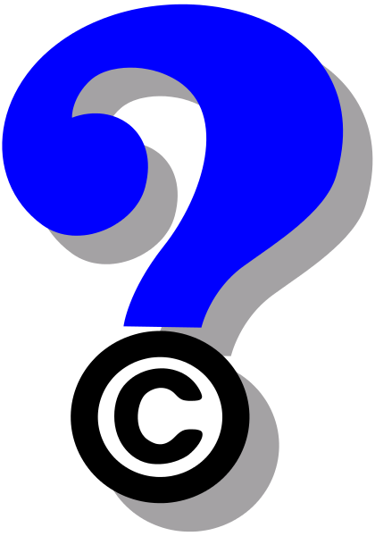
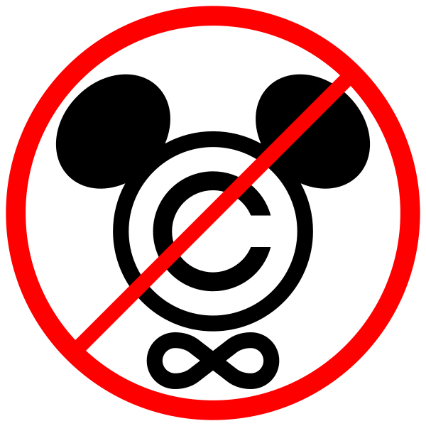

Usando e Produzindo Material Livre
Licenças Creative Commons e outras licenças livres
Como achar material para minhas aulas online?
 (Imagem CC BY-SA 3.0 Unported, by https://commons.wikimedia.org/wiki/User:Yung6)
Durante a pandemia, nós, professores, precisamos produzir aulas online. Para isso, provavelmente vamos precisar de imagens, vídeos, sons etc. de autoria de outras pessoas.
Também vamos precisar disponibilizar publicamente nosso material original.
Este post ajuda a responder às seguintes perguntas:
Como podemos usar material produzido por outras pessoas sem infringir direitos autorais?
Considerando que não somos egoístas e entendemos as dificuldades de quem precisa produzir e/ou transmitir conhecimento, como podemos disponibilizar o material que nós produzimos sem restringir excessivamente seu uso por outras pessoas?
O que são direitos autorais?
Por incrível que pareça, a idéia de direitos autorais não surgiu para impedir que as pessoas fizessem cópias ilegais de obras artísticas. É claro que um dos objetivos da legislação é garantir que o autor da obra tenha um retorno financeiro sobre o seu trabalho, se assim desejar.
Se assim desejar? Como assim? Por que alguém não desejaria ter retorno financeiro sobre seu próprio trabalho?
Se você é professor de uma universidade pública, você já recebe um salário para produzir e transmitir conhecimento… para o público. Se, durante o seu trabalho, você cria um vídeo ou escreve um livro, até onde é justo receber dinheiro extra por isso, se o seu salário já inclui a compensação por este trabalho?
Mas esta não é a questão aqui.
Voltando ao objetivo dos direitos autorais: além de garantir o retorno financeiro do autor por um tempo limitado, os direitos autorais existem para garantir a renovação da cultura de toda a sociedade.
O crucial, aqui, é que os direitos autorais expiram e, quando isso acontece, as obras passam a ser de domínio público. O conteúdo dessas obras passa a fazer parte do “caldo cultural” da sociedade, onde outros artistas e pensadores vão buscar material para novas obras.
É assim que a legislação, ao determinar que os direitos autorais expiram depois de um certo prazo, garantem uma situação justa, que promove o avanço da cultura e do conhecimento:
O autor recebe sua compensação financeira por um tempo limitado, depois do qual é incentivado a produzir novas obras para se sustentar;
A sociedade dispõe de um repositório continuamente renovado de obras no domínio público para servir de ponto de partida para novas obras, por novos autores.

O principal problema, obviamente, é o Mickey Mouse.
A Walt Disney Company criou o Mickey em 1928. Na época, a vigência dos direitos autorais nos Estados Unidos era de 75 anos (longo demais, aliás, segundo estudiosos da legislação). Antes que este prazo expirasse, a empresa pressionou o Congresso americano a aumentar a vigência de todas as obras existentes no país.
Atualmente, dependendo da obra, este prazo pode chegar a 100 anos.
O irônico, aqui, é que muitos outros desenhos animados cujos direitos autorais são da Disney, como, por exemplo, Branca de Neve, são meras adaptações de obras que já existiam antes, na forma de livros, e que já estavam em domínio público.
A Disney e outras empresas de comunicação também se empenharam para convencer a população de que os direitos autorais existem apenas para impedir cópias ilegais. É por isso que não pensamos sobre o outro objetivo (o de garantir um domínio publico constantemente renovado).
Sobre esta e outras manobras semelhantes, Lawrence Lessig escreveu no seu livro Free Culture:
“Jamais houve em nossa história um período em que tanto da nossa “cultura” teve um “dono” como atualmente. E nunca antes houve um período quando a concentração de poder para controlar os usos da cultura foi tão inquestionavelmente aceita como o é atualmente."
O que são as licenças Creative Commons?
Lawrence Lessig é um advogado americano, fundador da Creative Commons. Uma boa introdução ao seu trabalho pela reforma dos direitos autorais é esta TED talk, de 2007 (se quiser, configure para ver legendas em português). Mais informações sobre o vídeo, incluindo sua transcrição, no site TED.
Lessig também escreveu o livro Free Culture, disponível no original em inglês e em uma tradução em português, ambos, é claro, sob licença livre.
A organização Creative Commons tem um site em português, que explica como você pode usar e criar material sob diversos tipos de licenças livres, dentro da lei, sem se preocupar com a possibilidade de infringir direitos autorais.
As principais licenças Creative Commons são as seguintes (texto do site brasileiro da CC):
Atribuição (CC BY)

Permite que outros distribuam, remixem, adaptem e criem a partir do seu trabalho, mesmo para fins comerciais, desde que lhe atribuam o devido crédito pela criação original. É a licença mais flexível de todas as licenças disponíveis. É recomendada para maximizar a disseminação e uso dos materiais licenciados.
Atribuição-CompartilhaIgual (CC BY-SA)

Permite que outros remixem, adaptem e criem a partir do seu trabalho, mesmo para fins comerciais, desde que lhe atribuam o devido crédito e que licenciem as novas criações sob termos idênticos. Esta licença costuma ser comparada com as licenças de software livre e de código aberto “copyleft”. Todos os trabalhos novos baseados no seu terão a mesma licença, portanto quaisquer trabalhos derivados também permitirão o uso comercial. Esta é a licença usada pela Wikipédia e é recomendada para materiais que seriam beneficiados com a incorporação de conteúdos da Wikipédia e de outros projetos com licenciamento semelhante.
Atribuição-SemDerivações (CC BY-ND)

Permite a redistribuição, comercial e não comercial, desde que o trabalho seja distribuído inalterado e no seu todo, com crédito atribuído a você.
Atribuição-NãoComercial (CC BY-NC)

Permite que outros remixem, adaptem e criem a partir do seu trabalho para fins não comerciais, e embora os novos trabalhos tenham de lhe atribuir o devido crédito e não possam ser usados para fins comerciais, os usuários não têm de licenciar esses trabalhos derivados sob os mesmos termos.
Atribuição-NãoComercial-CompartilhaIgual (CC BY-NC-SA)

Permite que outros remixem, adaptem e criem a partir do seu trabalho para fins não comerciais, desde que atribuam a você o devido crédito e que licenciem as novas criações sob termos idênticos.
Atribuição-NãoComercial-SemDerivados (CC BY-NC-ND)
 Esta é a mais restritiva das licenças principais, só permitindo que outros façam download dos seus trabalhos e os compartilhem desde que atribuam crédito a você, mas sem que possam alterá-los de nenhuma forma, nem utilizá-los para fins comerciais.
Esta é a mais restritiva das licenças principais, só permitindo que outros façam download dos seus trabalhos e os compartilhem desde que atribuam crédito a você, mas sem que possam alterá-los de nenhuma forma, nem utilizá-los para fins comerciais.Domínio público (CC 0)
Nenhuma restrição.
No site da Creative Commons, você encontra links para o texto legal de todas as licenças. Não é necessário que o texto legal esteja incluído na obra. Para que ocorra o efeito legal, basta que o autor declare que o material está sendo disponibilizado sob uma dessas licenças.
Onde achar material livre?
Em https://www.sitepoint.com/creative-commons-sources/, existe uma lista de sites onde você pode baixar imagens, vídeos, músicas, arquivos de áudio, livros e outras obras disponíveis sob licenças livres.
Eu costumo encontrar o que preciso em
Que licença usar para o material que eu criei?
Você decide.
Eu, pessoalmente, prefiro Atribuição-NãoComercial-CompartilhaIgual (CC BY-NC-SA), que obriga a atribuir o material ao autor (eu) e a não usar o material para fins comerciais, ao mesmo tempo que permite o remix (modificações e posterior distribuições, desde que sob esta mesma licença).
Isto também me permite usar, no meu trabalho, obras de autores que proíbem o uso comercial do seu trabalho, pois, se alguém criar uma obra derivada da minha, não vai poder usá-la comercialmente.
Seja qual for a licença escolhida, não se esqueça de
Incluir no seu trabalho as atribuições aos autores dos trabalhos que você usou, se eles assim exigem (e nada impede que você também inclua atribuições aos autores que não as exigem).
Incluir a licença que você está estipulando para o seu trabalho.